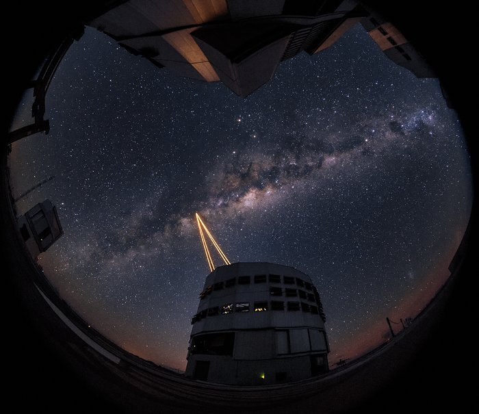
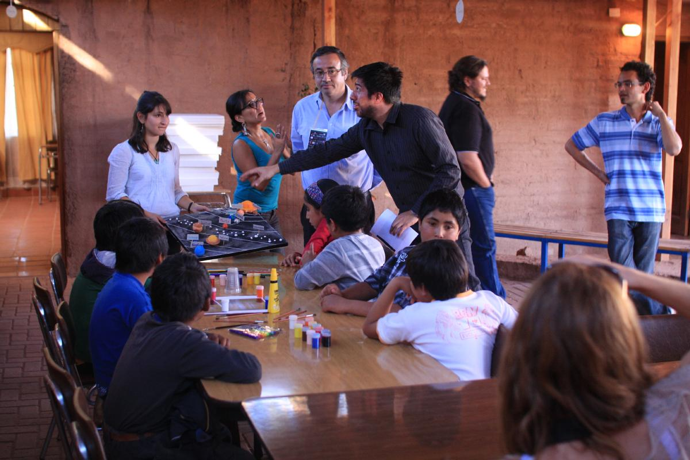
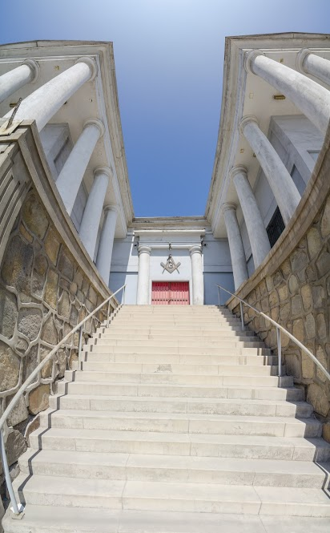

La gran aventura
 Foto: ESONo es una exageración decir que Chile, y la región de Atacama en particular, son el escenario de la mayor aventura en la historia de la humanidad: la búsqueda de vida en otros planetas. Se han construido los observatorios astronómicos terrestres más importantes, ALMA, GEMINI, Magallanes, Paranal, y CTIO. Están en construcción los telescopios más grandes del mundo: el Gran Telescopio Magallanes de 16-m de diámetro, y el ELT, de 39-m de diámetro. Junto con esto se desarrollan técnicas que permiten contrarrestar los efectos de la turbulencia atmosférica dejándonos en condiciones de producir imágenes más nítidas de las que se pueden obtener con telescopios espaciales, actuales y futuros.
Todos los días viajan a estos observatorios astrónomos e ingenieros de las más diversas partes del mundo. Hacen su trabajo y vuelven a sus países de origen. Los datos viajan a Europa por fibra óptica. ¿Que queda en nuestro país? Además de dar trabajo, y ayuda a las comunidades locales, estos observatorios han hecho un esfuerzo para entregar hasta un 10% del tiempo de telescopios a astrónomos que trabajan en instituciones chilenas, y han otorgado financiamiento a universidades para becas y proyectos. Nosotros, en el proyecto "Frontera de Universos, encuentro de mundos," queremos hacer más. En la próxima columna les contaremos más.
Actividades
La Corporación Acción Solidaria de Tocopilla esta llevando a cabo un proyecto piloto para llevar ciencia y científicos a las comunidades de Tocopilla y María Elena. Estamos comenzando con clases y capacitación a profesores y alumnos. Con ellos estamos trabajando en la creación de material didáctico para ser utilizados en clases. No hay mejor apoyo que el material que hemos creado nosotros mismos.
 Evento Noche Zero en San Pedro de AtacamaEn los Viajes a las Estrellas, astrónomos e ingenieros voluntarios son invitados por la comunidad y se realizan distintas actividades junto a niños, sus padres y madres. Pensamos que esta oportunidad de participar en un evento de esta naturaleza nos enriquece a todos, y le otorga a las familias involucradas la oportunidad de conversar de temas que quizá no son muy comunes en sus hogares. Creemos que es una manera de realizar el slogan "la educación comienza por casa.”
En los eventos llamados Astronomía en el Pub, astrónomos dan una pequeña charla en un Pub para incentivar la participación de los presentes, dándoles la oportunidad de hacer preguntas sobre vida en el universo, agujeros negros, universos paralelos, etc. Es una manera de llegar a un espectro amplio de personas. También realizamos Fiestas de Estrellas en las cuales la comunidad es invitada a observar el cielo por los telescopios.
Apoyo comunitario
 ExploratorioPara el proyecto Frontera de Universos el apoyo de la comunidad es de vital importancia: autoridades municipales, profesores, empresarios, vecinos, aficionados a la astronomía. Tocopilla ha sido un ejemplo: la Ilustre Municipalidad de Tocopilla financió la compra de un telescopio y ha puesto a nuestra disposición un bus para transportar profesores; el Club Internacional nos ha cedido el uso de su sede como un Exploratorio y sala de presentaciones; empresas privadas han financiado alimentación para los estudiantes que participan en estos eventos, transporte y estadía de astrónomos en la ciudad (E-CL, SQM); el Observatorio Europeo Austral, ESO, ha financiado un telescopio solar; la PDI nos ha ayudado para resolver un problema que alguna vez experimentamos. Nos queda mucho por realizar (y aprender) pero vamos bien encaminados. Nuestro sueño es que estas actividades inspiren y entusiasmen a niños y niñas.